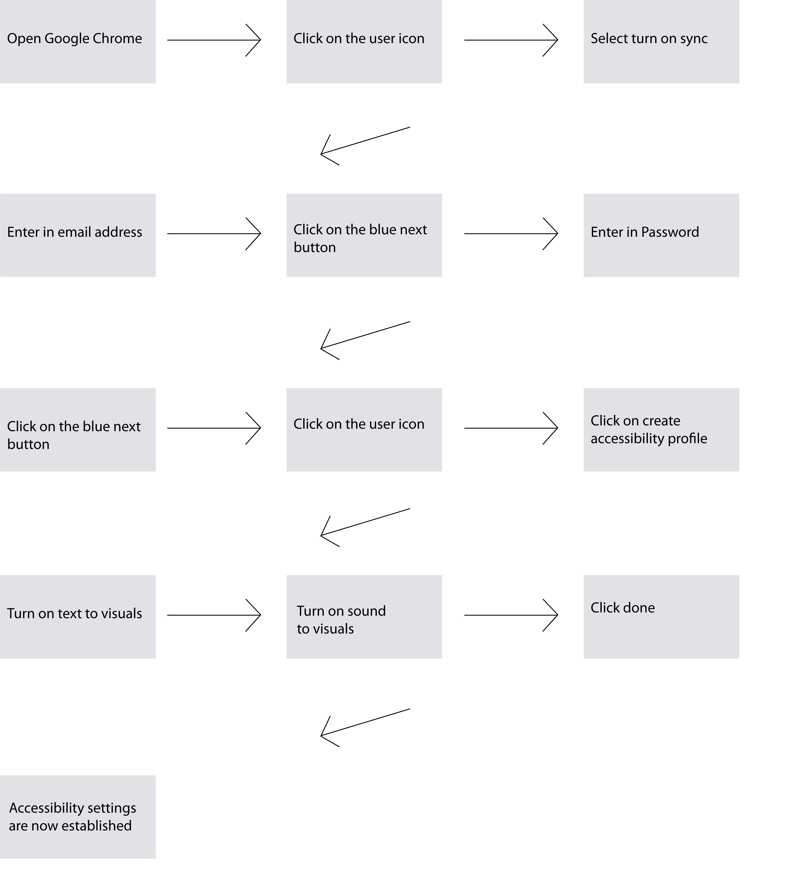

Music Therapy Resources
-
American Music Therapy Association
Website Link -
Music Therapy Source
Website Link -

The Power of Music-Music Therapy
Website Link
Using p5.js and the sound library in p5.js, this music visualization was created. The visualization is created from the amplitude of the music. The goal of this visualization is to use the piano instrument as music therapy to feel music for the hearing impaired.
This extension is the music accommodation aspect of this brand application.
Interested in music therapy products which are better than an app or a therapy session? Subscribe now